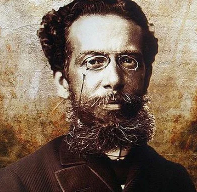

Joaquim Maria Machado de Assis, nascido no rio de Janeiro (21 de junho de 1839
- 29 de setembro de 1908) foi um escritor brasileiro, considerado por muitos críticos,
estudiosos, escritores e leitores o maior nome da literatura brasileira. Escreveu em
praticamente todos os gêneros literários, sendo poeta, romancista, cronista, dramaturgo,
contista, folhetinista, jornalista e crítico literário. Testemunhou a Abolição da escravatura
e a mudança política no país quando a República substituiu o Império, além das mais
diversas reviravoltas pelo mundo em finais do século XIX e início do XX, tendo sido
grande comentador e relator dos eventos político-sociais de sua época.
Nascido no Morro do Livramento, Rio de Janeiro, de uma família pobre, mal estudou em escolas públicas e
nunca frequentou universidade. Para o considerado crítico literário norte-americano Harold Bloom,
Machado de Assis é o maior escritor negro de todos os tempos, embora outros estudiosos prefiram
especificar que Machado era mestiço, filho de um descendente de negros alforriados e de uma
portuguesa da ilha de São Miguel. Seus biógrafos notam que, interessado pela boemia e pela corte, lutou
para subir socialmente abastecendo-se de superioridade intelectual e da cultura da capital
brasileira. Para isso, assumiu diversos cargos públicos, passando pelo Ministério da Agricultura, do
Comércio e das Obras Públicas, e conseguindo precoce notoriedade em jornais onde publicava suas
primeiras poesias e crônicas. Machado de Assis pôde assistir, durante sua vida, que abarca o final da
primeira metade do século XIX até os anos iniciais do século XX, a enormes mudanças históricas na
política, na economia e na sociedade brasileira e também mundial. Em sua maturidade, reunido a
intelectuais e colegas próximos, fundou e foi o primeiro presidente unânime da Academia Brasileira de
Letras.
A extensa obra machadiana constitui-se de dez romances, 205 contos, dez peças teatrais, cinco coletâneas
de poemas e sonetos, e mais de seiscentas crônicas. Machado de Assis é considerado o introdutor do
Realismo no Brasil, com a publicação de Memórias Póstumas de Brás Cubas (1881). Este romance é posto ao
lado de todas suas produções posteriores, Quincas Borba, Dom Casmurro, Esaú e Jacó e Memorial de Aires,
ortodoxamente conhecidas como pertencentes à sua segunda fase, em que notam-se traços de crítica social,
ironia e até pessimismo, embora não haja rompimento de resíduos românticos. Dessa fase, os críticos
destacam que suas melhores obras são as do que se passou a chamar de "Trilogia Realista". Sua primeira
fase literária é constituída de obras como Ressurreição, A Mão e a Luva, Helena e Iaiá Garcia, onde
notam-se características herdadas do Romantismo, ou "convencionalismo", como prefere a crítica moderna.
Sua obra foi de fundamental importância para as escolas literárias brasileiras do século XIX e do século
XX e surge nos dias de hoje como de grande interesse acadêmico e público para entender o Brasil e o
mundo. Influenciou grandes nomes das letras, como Olavo Bilac, Lima Barreto, Drummond de Andrade, John
Barth, Donald Barthelme e muitos outros. Ainda em vida, alcançou fama e prestígio pelo Brasil e países
vizinhos. Hoje em dia, por sua inovação literária e por sua audácia em temas sociais e precoces, é
frequentemente visto como o escritor brasileiro de produção sem precedentes, de modo que, recentemente,
seu nome e sua obra têm alcançado diversos críticos, influenciados, estudiosos e admiradores do mundo
inteiro. Machado de Assis é considerado um dos grandes gênios da história da literatura, ao lado de
autores como Dante, Shakespeare e Camões. Machado de Assis e Eça de Queiroz são considerados os dois
maiores escritores em língua portuguesa do século XIX. Foi incluído na lista oficial dos Heróis
Nacionais do Brasil e é homenageado pelo principal prêmio literário brasileiro, o Prêmio Machado de
Assis.
CURIOSIDADE 01
Início nas letras
Machado de Assis tinha um avô (Francisco de Assis) que era escravo na
fazenda do militar Bento Barroso Pereira, que ocupou o cargo de Ministro da Guerra de 1824 a
1828, na época em que o Brasil ainda era um império. Pereira era casado com Maria José de
Mendonça Barroso, que batizou Machado de Assis e empresta livros de sua biblioteca quando ele
começou a ler.
Biografia
1 - Primeiros anos
Machado de Assis nasceu em 21 de junho de 1839, no Morro do Livramento, no Rio de Janeiro, então capital
do Império, em pleno Período Regencial. Seu pai foi Francisco José de Assis, mulato que pintava paredes,
filho de Francisco de Assis e Inácia Maria Rosa, ambos pardos e escravos alforriados. A mãe foi a
portuguesa Maria Leopoldina Machado da Câmara, branca, filha de Estêvão José Machado e Ana Rosa. Os
Machado haviam emigrado para o Brasil em 1815, oriundos da Ilha de São Miguel, no arquipélago português
dos Açores. Ambos os pais de Machado de Assis sabiam ler e escrever, fato incomum na sua época e classe
social. Ambos eram agregados da Dona Maria José de Mendonça Barroso Pereira, esposa do falecido senador
Bento Barroso Pereira, que abrigou seus pais e os permitiu morar junto com ela.
As terras do Livramento eram ocupadas pela chácara da família de Maria José e já em 1818 o terreno
começou a ser loteado de tão imenso que era, dando origem à rua Nova do Livramento. Maria José tornou-se
madrinha do bebê e Joaquim Alberto de Sousa da Silveira, seu cunhado, tornou-se o padrinho, de modo que
os pais de Machado resolveram homenagear os dois nomeando-o com seus nomes. Nascera junto a ele uma
irmã, que morreu jovem, aos 4 anos, em 1845. Iniciou seus estudos numa escola pública da região, mas não
se mostrou interessado por ela. Ocupava-se também em celebrar missas, o que lhe fez conhecer o Padre
Silveira Sarmento, que, segundo certos biógrafos, se tornou seu mentor de latim e amigo.

Em seu folhetim Casa Velha, publicado de janeiro de 1885 a fevereiro de 1886 na revista carioca A
Estação, e publicado pela primeira vez em livro em 1943 graças à Lúcia Miguel Pereira, Machado fornece
descrição do que seria a casa principal e a capela da chácara do Livramento: "A casa, cujo lugar e
direção não é preciso dizer, tinha entre o povo o nome de Casa Velha, e era-o realmente: datava dos fins
do outro século. Era uma edificação sólida e vasta, gosto severo, nua de adornos. Eu, desde criança,
conhecia-lhe a parte exterior, a grande varanda da frente, os dois portões enormes, um especial às
pessoas da família e às visitas, e outro destinado ao serviço, às cargas que iam e vinham, às seges, ao
gado que saía a pastar. Além dessas duas entradas, havia, do lado oposto, onde ficava a capela, um
caminho que dava acesso às pessoas da vizinhança, que ali iam ouvir missa aos domingos, ou rezar a
ladainha aos sábados". A vizinhança, de forte influência católica, frequentava a missa na capela; a casa
era "uma espécie de vila ou fazenda", onde Machado passou sua infância.
Ao completar 10 anos, Machado tornou-se órfão de mãe. Mudou-se com seu pai para São Cristóvão, na Rua
São Luís de Gonzaga nº 48. Seu pai viria a casar em segundas núpcias, em 18 de junho de 1854, com Maria
Inês da Silva, mulata e lavadeira, mulher de grande coração que viria a ser o amparo da sua infância.
Maria Inês cuidaria do menino após a morte de Francisco, algum tempo tempo depois. Segundo escrevem
alguns biógrafos, a madrasta confeccionava doces numa escola reservada para meninas e Machado teve aulas
no mesmo prédio, enquanto à noite estudava língua francesa com um padeiro imigrante. Certos biógrafos
notam seu imenso e precoce interesse e abstração por livros.
CURIOSIDADE 02
O Bruxo do Cosme Velho
O escritor carioca morou durante muitos anos na Rua Cosme Velho, no bairro de mesmo nome, no Rio
de
Janeiro. Diz a lenda que ele queimou várias cartas em um caldeirão no sobrado situado nesse
endereço, fazendo a vizinhança o chamar de “O Bruxo do Cosme Velho” - alcunha que só se
popularizou
quando o poeta Carlos Drummond de Andrade escreveu “A um bruxo, com amor”, no qual reverencia a
vida
e a obra de Machado de Assis.
2 - Jornais, poemas e óperas
Tudo indica que Machado evitou o subúrbio carioca e procurou a subsistência no centro da cidade. Com
muitos planos e espírito aventureiro, fez algumas amizades e relacionamentos. Em 1854, publicou seu
primeiro soneto, dedicado à "Ilustríssima Senhora D.P.J.A", assinando como "J. M. M. Assis", no
Periódico dos Pobres. No ano seguinte, passou a frequentar a livraria do jornalista e tipógrafo
Francisco de Paula Brito. Paula Brito era um humanista e sua livraria, além de vender remédios, chás,
fumo de rolo, porcas e parafusos, também servia como ponto de encontro da sua Sociedade Petalógica
(peta=(ê), s. f. 1. Mentira, patranha). Um tempo mais tarde, Machado se referiria à Sociedade da
seguinte forma: "Lá se discutia de tudo, desde a retirada de um ministro até a pirueta da dançarina da
moda, desde o dó do peito de Tamberlick até os discursos do Marquês do Paraná".
No dia 12 de janeiro de 1855, Brito publicou os poemas "Ela" e "A Palmeira" na Marmota Fluminense,
revista bimensal do livreiro. Estes dois versos, reunidos junto àquele soneto para a Dona
Patronilha, fazem parte da primeira produção literária de Machado de Assis. Aos dezessete anos, foi
contratado como aprendiz de tipógrafo e revisor de imprensa na Imprensa Nacional, onde foi protegido e
ajudado por Manuel Antônio de Almeida (que anos antes havia publicado sua magnum opus Memórias de um
Sargento de Milícias), que o incentivou a seguir a carreira literária. Machado trabalhou na Imprensa
Oficial de 1856 a 1858. No fim deste período, a convite do poeta Francisco Otaviano, passou a colaborar
para o Correio Mercantil, importante jornal da época, escrevendo crônicas e revisando textos.
Durante esta época o jovem já frequentava teatros e outros meios artísticos. Em novembro de 1859,
estreava Pipelet, ópera com libreto de sua autoria baseada em Os Mistérios de Paris de Eugène Sue e
com música de Ferrari. Escreveu ele sobre a apresentação:
"Abre-se segunda-feira, a Ópera Nacional com o Pipelet, ópera em actos, música de Ferrari, e poesia do
Sr. Machado de Assis, meu íntimo amigo,
meu alter ego, a quem tenho muito affecto, mas sobre quem não posso dar opinião nenhuma."
Pipelet não agrada consideravelmente o público e os folhetinistas ignoram-na. Gioacchino Giannini, que dirigiu a orquestra da ópera, sentiu-se contrariado com a orquestra e escreveu num artigo: "Não falaremos do desempenho de Pipelet. Isso seria enfadonho, horrível e espantoso para quem o viu tão regularmente no Teatro de São Pedro". O final da ópera era melancólico, com o enterro agonizante do personagem Pipelet. Machado de Assis, em 1859, escreveu que "o desempenho da mesma maneira que o primeiro, fez nutrir esperança de uma boa companhia de canto." De fato, o jovem nutria interesse na campanha de construção da Ópera Nacional. No ano seguinte a de Pipelet, produziu um libreto chamado As Bodas de Joaninha, entretanto sua repercussão foi nula. Anos mais tarde, registraria a nostalgia do folhetinismo de sua juventude.
CURIOSIDADE 03
Academia Brasileira de Letras
Machado de Assis foi um dos membros fundadores da Academia Brasileira de Letras (ABL), em 1897, ao lado de ícones como Olavo Bilac, Visconde de Taunay e Ruy Barbosa. Sua cadeira, a de número 23, já foi ocupada por outros escritores famosos, como Lafayette Rodrigues Pereira, Jorge Amado e Zélia Gattai. Desde 2013, a posição pertence a Antônio Torres. A inspiração para a ABL, da qual Machado foi o primeiro presidente, veio da Academia Francesa de Letras.